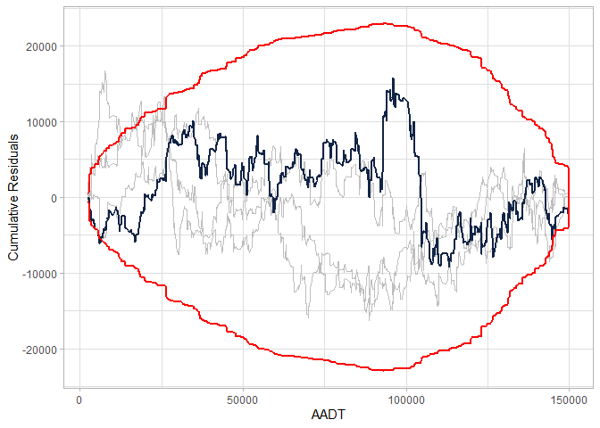

Cumulative residual (CURE) plots assess the goodness-of-fit of a covariate in a generalized linear regression model, usually a negative binomial regression or a Poisson regression. The package cureplots produces CURE plots for the requested variables produced with ggplot2 or a table to easily produce a customized plot with the desired package.
Installation
You can install the development version of cureplots from GitHub with the following:
# install.packages("devtools")
devtools::install_github("gbasulto/cureplots")Example
The example below shows
- How to produce a cureplot directly from the model object, and
- How to produce the table to customize a plot.
A Poisson GLM model is adjusted to simulated data using the package glm. The functions also work with the gam package.
library(cureplots)
## basic example
set.seed(2000)
## Define parameters
beta <- c(-1, 0.3, 3)
## Simulate idependent variables
n <- 900
AADT <- c(runif(n, min = 2000, max = 150000))
nlanes <- sample(x = c(2, 3, 4), size = n, replace = TRUE)
LNAADT <- log(AADT)
## Simulate dependent variable
theta <- exp(beta[1] + beta[2] * LNAADT + beta[3] * nlanes)
y <- rpois(n, theta)
## Fit model
mod <- glm(y ~ LNAADT + nlanes, family = poisson)
## Calculate residuals
res <- residuals(mod, type = "working")
## Calculate CURE plot data
cure_df <- calculate_cure_dataframe(AADT, res)
#> Covariate: AADT
head(cure_df)
#> # A tibble: 6 × 5
#> AADT residual cumres lower upper
#> <dbl> <dbl> <dbl> <dbl> <dbl>
#> 1 2363. -0.000379 -0.000379 -0.000743 0.000743
#> 2 2435. 0.0112 0.0108 -0.0219 0.0219
#> 3 2724. 0.00769 0.0185 -0.0266 0.0266
#> 4 2978. -0.00233 0.0162 -0.0270 0.0270
#> 5 3007. -0.0119 0.00424 -0.0356 0.0356
#> 6 3149. -0.0101 -0.00589 -0.0407 0.0407
## Providing CURE data frame
cure_plot(cure_df)
#> CURE data frame was provided. Its first column, AADT, will be used.
## Providing glm object
cure_plot(mod, "LNAADT")
#> Covariate LNAADT will be used to produce CURE plot.
Example with Resampling
library(cureplots)
## basic example
set.seed(2000)
## Define parameters.
beta <- c(-1, 0.3, 3)
## Simulate idependent variables
n <- 900
AADT <- c(runif(n, min = 2000, max = 150000))
nlanes <- sample(x = c(2, 3, 4), size = n, replace = TRUE)
LNAADT <- log(AADT)
## Simulate dependent variable
theta <- exp(beta[1] + beta[2] * LNAADT + beta[3] * nlanes)
y <- rpois(n, theta)
## Fit model
mod <- glm(y ~ LNAADT + nlanes, family = poisson)
## Calculate residuals
res <- residuals(mod, type = "working")
## Calculate CURE plot data
cure_df <- calculate_cure_dataframe(AADT, res)
#> Covariate: AADT
n_resamples <- 3
library(tidyverse)
#> ── Attaching core tidyverse packages ──────────────────────── tidyverse 2.0.0 ──
#> ✔ dplyr 1.1.2 ✔ readr 2.1.4
#> ✔ forcats 1.0.0 ✔ stringr 1.5.0
#> ✔ ggplot2 3.4.2 ✔ tibble 3.2.1
#> ✔ lubridate 1.9.2 ✔ tidyr 1.3.0
#> ✔ purrr 1.0.1
#> ── Conflicts ────────────────────────────────────────── tidyverse_conflicts() ──
#> ✖ dplyr::filter() masks stats::filter()
#> ✖ dplyr::lag() masks stats::lag()
#> ℹ Use the conflicted package (<http://conflicted.r-lib.org/>) to force all conflicts to become errors
if (n_resamples > 0) {
resamples_tbl <-
1:n_resamples |>
map_df(\(x)
calculate_cure_dataframe(AADT, sample(res)) |>
transmute(resample = x, AADT, cumres)
)
}
#> Covariate: AADT
#>
#> Covariate: AADT
#>
#> Covariate: AADT
cure_plot(cure_df) +
geom_line(data = resamples_tbl, aes(x= AADT, y = cumres, group = resample), color = "grey")
#> CURE data frame was provided. Its first column, AADT, will be used.
head(cure_df)
#> # A tibble: 6 × 5
#> AADT residual cumres lower upper
#> <dbl> <dbl> <dbl> <dbl> <dbl>
#> 1 2363. -0.000379 -0.000379 -0.000743 0.000743
#> 2 2435. 0.0112 0.0108 -0.0219 0.0219
#> 3 2724. 0.00769 0.0185 -0.0266 0.0266
#> 4 2978. -0.00233 0.0162 -0.0270 0.0270
#> 5 3007. -0.0119 0.00424 -0.0356 0.0356
#> 6 3149. -0.0101 -0.00589 -0.0407 0.0407
## Providing CURE data frame
cure_plot(cure_df)
#> CURE data frame was provided. Its first column, AADT, will be used.